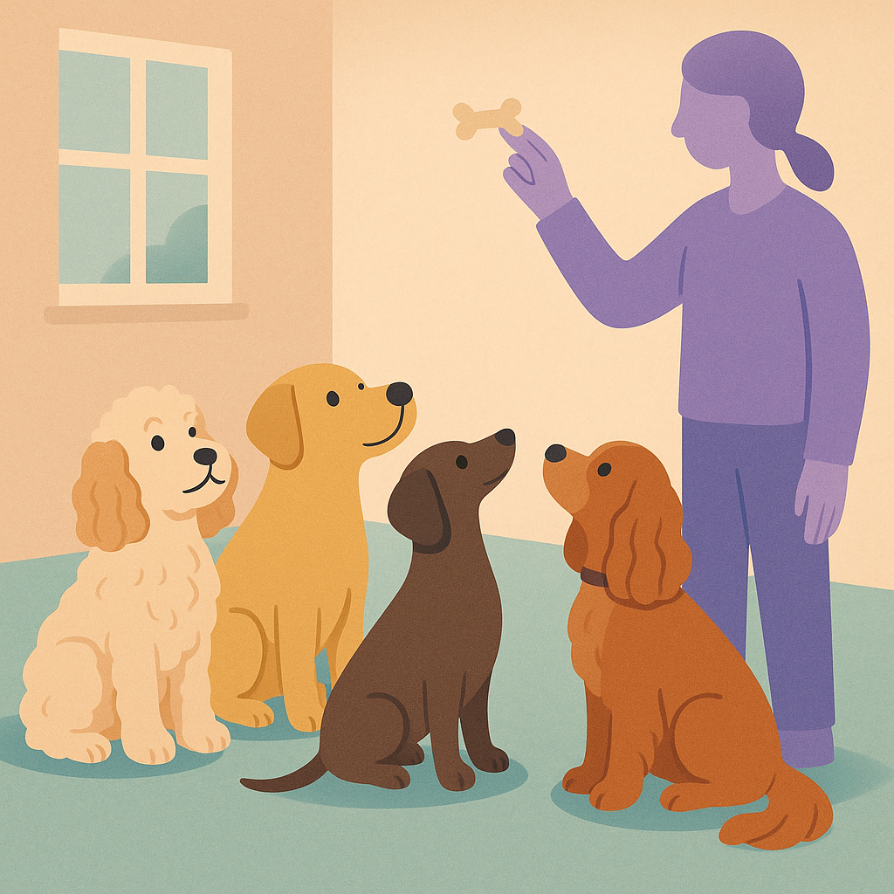

Puppy's First Year — The Complete UK Owner's Checklist
Contents
Introduction
The first year of your puppy's life determines everything. If you miss the critical socialisation window (weeks 3-16), your puppy may suffer lifelong anxiety, fear, and behavioural problems. If you skip vaccinations, your puppy risks deadly diseases. If you don't get insurance immediately, pre-existing conditions won't be covered later.
This isn't meant to scare you — it's meant to empower you with a clear month-by-month checklist so you don't accidentally skip anything important. Follow this guide and you'll have a healthy, confident, well-socialised dog.
Quick Summary
First year costs: £1,600-2,900. Critical items: Get insurance on day one (£25-40/month). Vaccinations weeks 2, 4, 8-12 (£40-70 each). Socialisation weeks 3-16 (free but essential). Neutering 5-7 months (£100-350). Training classes 8 weeks onwards (£60-150). Don't delay anything.
Weeks 1-8: First Home, Vet Visits & Early Training
Week 1: Arrival
- Vet check-up (within 48 hours): £40-80
- Get pet insurance immediately: £25-40/month. Pre-existing conditions won't be covered if you wait
- Equipment: Collar, lead, bed, bowls, crate (£100-300). Omlet dog crates come with a 60-day return window.
- Start house training: Frequent outdoor trips (after meals, naps, before bed)
Week 2: Vaccination 1
- First vaccination: £40-70 (leptospirosis, distemper, parvovirus)
- Worming: £15-30 (first dose). Puppy worming tablets on Amazon
- Flea treatment (optional): £5-15. Puppy flea treatments on Amazon
Weeks 3-8: Critical Socialisation & Training Start
- Socialisation window (weeks 3-16): THIS IS THE MOST IMPORTANT PERIOD. Expose puppy to different environments, people, sounds, surfaces. Keep outings short (5-10 mins) and positive. Avoid forcing scared puppies
- Vaccination 2 (week 4): £40-70
- House training: Most aren't reliable until 16+ weeks. Expect accidents
- Vaccination 3 (week 8-12): £40-70
- Puppy training class (week 8): Sign up now. Cost £60-150 for 6-week course
- Basic commands: Start sit, down, come using positive reinforcement only
Cost weeks 1-8: £300-600

Months 2-4: Vaccinations Complete & Training Progresses
Month 2 (Weeks 9-12)
- Complete final vaccination: £40-70 (week 8-12)
- Puppy training class: £60-150 (6-week course)
- Worming: Every 2 weeks until 12 weeks. £10-15 per dose
- Flea treatment: Now routine, £5-15 monthly
- Intensive socialisation: Continue exposing to new experiences
Month 3 (Weeks 13-16)
- Complete training class: May transition to adolescent class
- Socialisation peak: Still critical through week 16
- Training focus: Loose lead walking, reliable recall, settling
- Grooming practice: Introduce bathing, nail trimming, brushing
- Teething starts: Provide appropriate chew toys. £10-30. Kong Puppy Toys and Nylabone Puppy Teething are the two brands vets recommend most.
Month 4 (Weeks 17-20)
- Optional booster vaccination: Some vets recommend. £40-70
- Training consolidation: Focus on reliability and impulse control
- Professional groom (if needed): £30-60 especially for poodles/doodles
- Teething: Peaks now. Cold toys help
Cost months 2-4: £300-500
Months 4-6: Rapid Growth & Neutering Prep
Month 4-5
- Growth monitoring: Watch for limping or difficulty rising (signs of dysplasia)
- Diet adjustment: Switch to junior formula as puppy grows. Large breed puppies especially need appropriate calcium/phosphorus ratios. See our guide to the best dog food options for a comparison of premium brands, or try AATU grain-free puppy food or Barking Heads puppy range.
- Supplements: A vet-formulated puppy supplement like Your Pet Nutrition's Puppy Prime can fill nutritional gaps during rapid growth phases.
- Exercise appropriate to size: Large breed puppies should NOT do excessive jumping or long runs (damages growing joints)
- Book neutering appointment: Usually 5-7 months. Cost £100-350
Month 5-6
- Neutering surgery: £100-350. Pre-op blood test £50-100 (recommended)
- Post-op care (10-14 days): Restrict activity, keep wound dry, give painkillers/antibiotics
- Suture removal: Usually day 10-14. Often included in cost
- Training continues: Focus on adolescent manners and reliability
- Teething ends: By 6-7 months adult teeth complete
Cost months 4-6: £300-600
Months 6-12: Adolescence & Settlement
Month 6-9: Adolescent Phase
- Adolescent phase (challenging!): Puppy forgets training and tests boundaries
- Recall training critical: Practise daily. This is when puppies start ignoring commands
- Professional grooming routine: Every 6-8 weeks for doodles. £30-60 per groom
- Worming routine: Continue monthly until 6 months, then 3-monthly
Month 9-12: Maturation
- Annual health check-up: £50-100
- Annual booster vaccination: Around month 12. £40-70
- Advanced training (optional): Agility, obedience, tricks. Varies (£100-500)
- Behaviour assessment: Adult temperament mostly apparent by 12 months
Cost months 6-12: £400-700
Complete First Year Cost Summary
Click any category to see our recommended products and where to buy them.
- Omlet Dog Crates — sturdy, easy to clean, 60-day return window
- Omlet Dog Beds — washable covers, multiple sizes
- Puppy collar & lead sets on Amazon
- Stainless steel puppy bowls on Amazon
- Training clickers on Amazon — essential for positive reinforcement training
- Kong Puppy Toys — the single best investment for teething and enrichment
- Read our full pet insurance comparison — Petplan, ManyPets, Animal Friends and more ranked
- Everypaw Pet Insurance
- Co-op Pet Insurance
Get insurance on day one — pre-existing conditions won't be covered if you wait.
Vaccinations must be administered by a registered vet — there's no way to reduce this cost, but insurance may cover booster jabs depending on your policy. See our guide to vet bills in the UK for what to expect.
Neutering is performed by your vet. Cost varies by dog size, sex, and location. Some charities (PDSA, Dogs Trust, Blue Cross) offer subsidised neutering if you're on benefits. See our vet bills guide for a breakdown.
- Training clickers on Amazon
- Puppy training treats on Amazon — small, soft, high-value treats work best
- House training pads on Amazon
Look for APDT or IMDT-accredited trainers in your area — they use reward-based methods only.
- AATU Grain-Free Puppy Food — 10% commission, single-source protein
- Barking Heads Puppy Food — widely available, good mid-range option
- Read our fresh dog food comparison — Butternut Box vs Tails.com vs Pure Pet Food
Transition gradually over 7–10 days when switching brands. Start junior/adult formula from 4–6 months depending on breed size.
Start handling paws, ears, and teeth early — it makes professional grooming much easier later.
Key Takeaway
Your puppy's first year is foundational. The socialisation window (3-16 weeks) cannot be re-created — miss it and you risk lifelong behavioural problems. Get insurance on day one, never skip vaccine appointments, invest in training classes, and get your puppy neutered at the right age. The first year costs £1,600-2,900, but it's vastly cheaper than fixing behavioural issues or health problems later. Follow this checklist, stay consistent, and you'll have a confident, healthy adult dog.
Shop Puppy Essentials
We've tested and reviewed these brands across our articles. Here are our top picks for new puppy owners:
Related Guides

Best Pet Insurance UK 2026: Compared and Ranked
We compare the UK's top pet insurance providers side-by-side, including Petplan, Animal Friends, Bought By Many, and ManyPets. Find out which offers the best value.
Read
How Much Does Pet Insurance Cost in the UK? Real Quotes Compared
Real monthly premiums for different dog and cat breeds, ages, and policy types. See what you'll actually pay for pet insurance in 2026.
Read
Best Cat Insurance UK 2026
Cat-specific insurance comparison. We review the best policies for indoor and outdoor cats, including breed-specific pricing and common feline claims.
Read